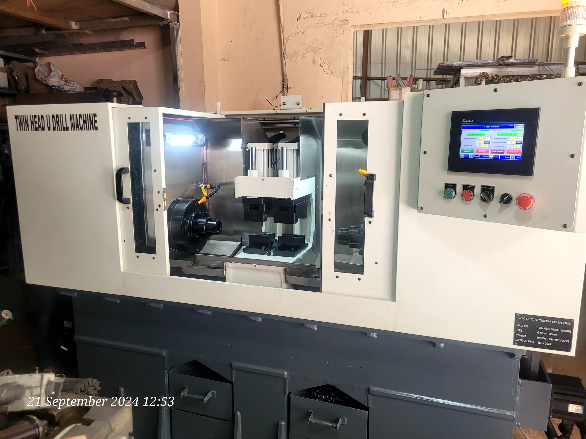
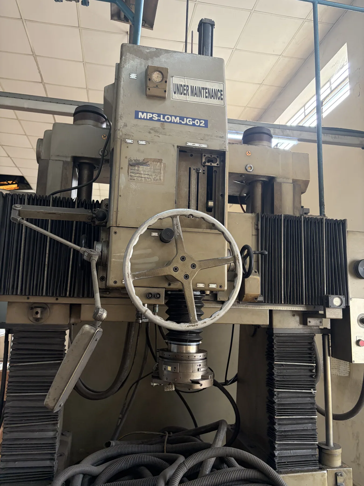
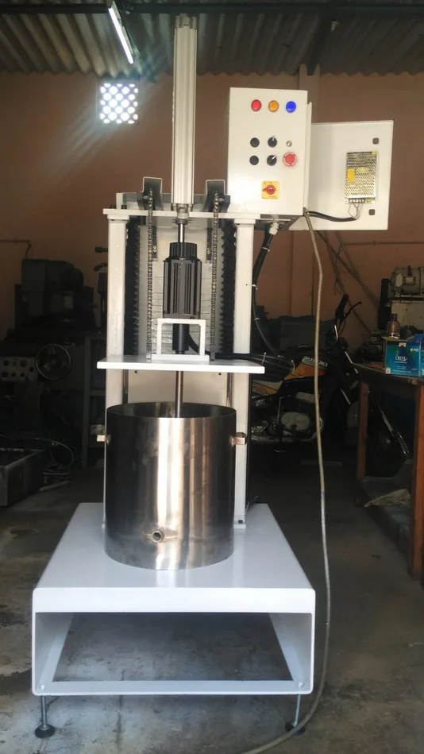
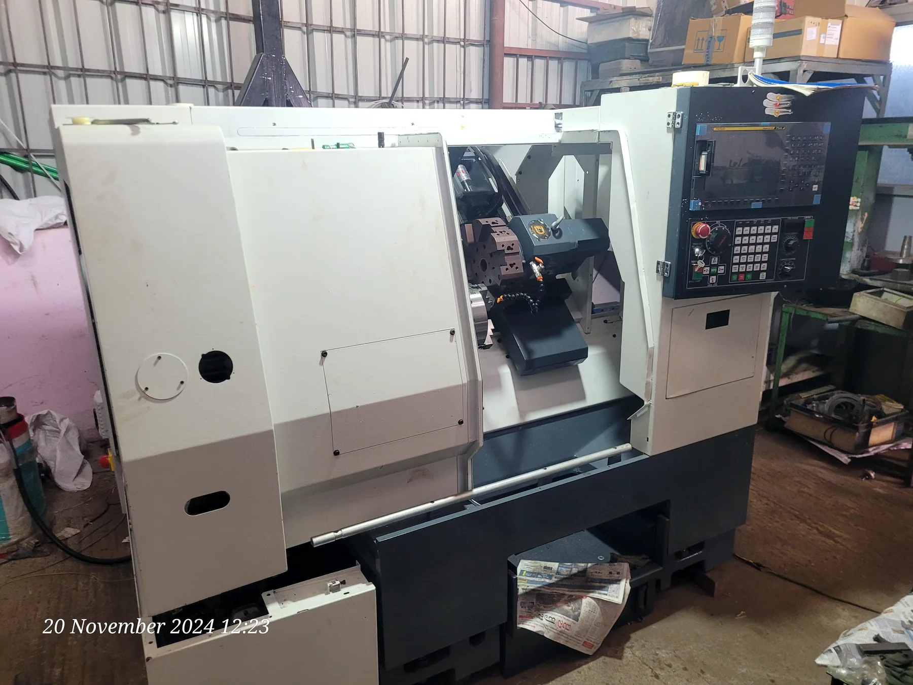

BENGALURU · MACHINE ENGINEERING · SINCE 2011
Engineered forPrecision
Bring VSK the part, cycle-time target, tolerance or machine challenge. We develop the mechanics, controls and process around the production result you need — whether that means a purpose-built SPM, automation or a CNC retrofit.
SPECIAL PURPOSE MACHINESRETROFIT & CNCAUTOMATIONPRECISION MANUFACTURING
04 SERVO / CUSTOM SPM
300+MACHINE REFERENCES
MECHANICAL · ELECTRICAL · CONTROLS
MULTI-DISCIPLINARY ENGINEERINGOne production objective.
One production objective.
Every discipline connected.
Choose the engineering category closest to your requirement, then inspect the actual VSK project groups, machine photographs, videos and engineering detail behind it.

Purpose-built SPM and CNC machine applications engineered around the component, operation, workholding and cycle target.
PROJECT GROUPSPHOTOS & VIDEOS
See related projects→FEATURED ENGINEERINGBuilt around the part.
Built around the part.
Proven through the process.
One focused example shows how fixture design, pneumatics, servo motion and control sequence become a complete production solution.
SPM / 20 · TESTING & AUTOMATIONAir Leakage
Air Leakage
Testing Machine
A dedicated testing system combining the fixture, pneumatic circuit, Festo servo motion and controlled sequence into one production-ready machine.
MOTIONFesto Servo UnitSCOPEFixture + Pneumatic + ControlAPPLICATIONAir Leakage Testing
SELECTED ENGINEERING EXPERIENCEFind experience relevant to your requirement →

Vertical Turning CNC Lathe
Vertical CNC turning reference developed around a dedicated PTFE rod application.
FIND RELATED EXPERIENCE →
Hauser Jig Grinding Retrofit
Five-axis jig-grinding modernization using PLC, HMI and servo motion on three axes.
FIND RELATED EXPERIENCE →
U Drill Machine
Production-focused special-purpose drilling equipment built around the machining application.
FIND RELATED EXPERIENCE →
Paint Agitating Machine
Dedicated process equipment showing VSK engineering beyond conventional CNC machine tools.
FIND RELATED EXPERIENCE →ENGINEERING DEPTHPrecision you can
Precision you can
put a number on.
Three measured references show the precision and cycle focus VSK can engineer around. Use Experience to find the machine, process or control platform closest to your requirement.
PROVEN EXPERIENCE54
Find work relevant to your requirement.
Search 39 Custom & SPM and 15 Retrofit & CNC references by process, machine type, customer need or control platform before you start the discussion.
39 CUSTOM & SPM15 RETROFIT & CNC
Search relevant experience →HOW VSK WORKSYour requirement stays connected
Your requirement stays connected
all the way to commissioning.
From application study to trials and commissioning, the same production target guides machine architecture, controls, build and validation.
Application, component, target and constraints.
Architecture, mechanism, workholding and controls.
Fabrication, assembly, electrical and fluid power.
CNC, PLC, HMI, servo and machine sequencing.
Trials, measurement, correction and confirmation.
Installation, handover and lifecycle support.

VSK ELECTRO-MECH SOLUTIONSEngineering from
Engineering from
Peenya since 2011.
Whether you need a new machine, a difficult retrofit or a production improvement that cannot be solved off the shelf, VSK brings machine-building, controls and machine-tool experience together around your requirement.
Understand the production problem before designing the machine.
300+ machines54 references6 disciplines
START AN ENGINEERING REQUIREMENTBring the requirement.
Bring the requirement.
Start with the engineering.
Share the part, bottleneck, drawing, existing machine or production target. VSK can connect your requirement to relevant machine-building, retrofit and automation experience from the first discussion.